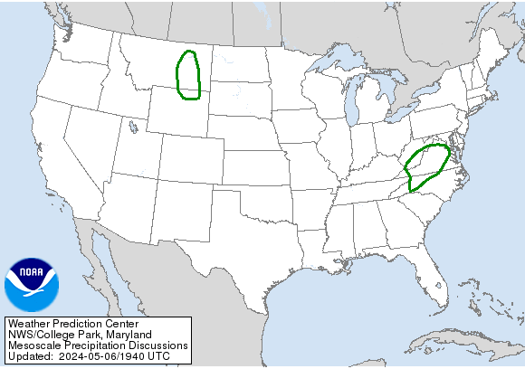
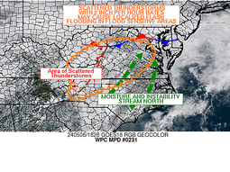
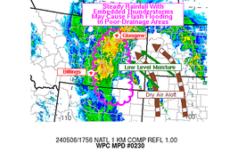

| WPC Met Watch |
| Current Mesoscale Precipitation Discussions (MPDs) |
| Updated: 19:41:05 UTC Mon May 06 2024 |
|

|
| Clicking on the U.S. map will take you to the MPD and associated graphic |
|
Download MPDs in GIS format: Shapefile
| KML
|
|
|

|
MPD #0231
Issued: 06/1835 UTC
Until: 07/0030 UTC
Concerning: Heavy rainfall...Flash flooding possible
|
|
|
|

|
MPD #0230
Issued: 06/1659 UTC
Until: 06/2300 UTC
Concerning: Heavy rainfall...Flash flooding possible
|
|
|
|
**More About MPDs (Click to Show/Hide)**
|
The meteorological watch (Metwatch) desk at WPC provides short term guidance during
heavy rain events leading to a threat of flash flooding to the National Weather Service (NWS) Weather Forecast Offices (WFOs),
River Forecast Centers (RFCs), the media, emergency managers and interested partners. Guidance is given in the form of Mesoscale
Precipitation Discussions (MPDs), that are ideally issued 1-6 hours ahead of time, averaging an area equal to roughly half the
size of the state of Kansas. Each MPD consists of a graphic indicating the area of concern and any pertinent meteorological
features as well as a brief text discussion focused on the mesoscale features supporting the anticipated heavy rainfall.
The potential for flash flooding within the area of concern will be highlighted by one of three headlines:
FLASH FLOODING LIKELY High confidence exists that environmental conditions are favorable, or will become favorable, for heavy rainfall
that will result in flash flooding.
FLASH FLOODING POSSIBLE Environmental conditions are favorable, or will become favorable, for
heavy rainfall, but there are questions about how the event will evolve and/or whether
flash flooding will occur.
FLASH FLOODING UNLIKELY High confidence exists that environmental conditions are unfavorable, or will become unfavorable, for
heavy rainfall that will result in flash flooding. (typically issued toward the end of an event)
While flash flooding is caused by a variety of factors (e.g., intense rainfall, dam failure, ice jams), WPC's Metwatch desk will only
focus on flash floods triggered by intense rainfall that occur over a sufficient areal coverage. Localized flash flooding is not considered.
The MPD appears under WMO Header: AWUS01 KWNH
and AWIPS header: KWNH FFGMPD
For additional information on WPC's MetWatch desk, please view this webinar
(31 minutes)
|
|
|
| Archived Mesoscale Precipitation Discussions (MPDs) |
|
|
|